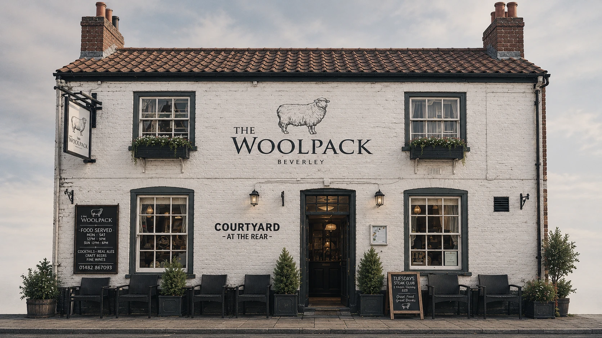

Popular
Pie & Ale Night
Our popular Pie & Ale Night, with our signature slow cooked beef shin pie.
See the menu ›
Beverley, East Yorkshire
Real ales, honest food, and a courtyard at the rear
Welcome to The Woolpack
Situated on the edge of the Beverley Westwood pastures, our traditional pub is popular with drinkers, diners and welcomes walkers and locals alike.
What’s better than gathering around the table with great food, and drinks flowing as freely as the chatter? After all, it’s what the pub is all about.
Popular
Our popular Pie & Ale Night, with our signature slow cooked beef shin pie.
See the menu ›Popular
Our traditional Sunday Roasts.
See the menu ›Tuesdays
Join us on a Tuesday for our Steak Club.
Call to book ›Reviews
Read what people are saying about us on TripAdvisor.
Gallery
The front, the courtyard and the details that make it feel like home.
Find us
Opening times
| Sunday | 12:00 – 23:00 |
|---|---|
| Monday | Closed |
| Tuesday | 16:00 – 23:00 |
| Wednesday | 16:00 – 23:00 |
| Thursday | 16:00 – 23:00 |
| Friday | 12:00 – 23:00 |
| Saturday | 12:00 – 23:00 |
Dinner and drinks, with credit cards accepted.
Ready when you are
Call us or send an email to book a table.